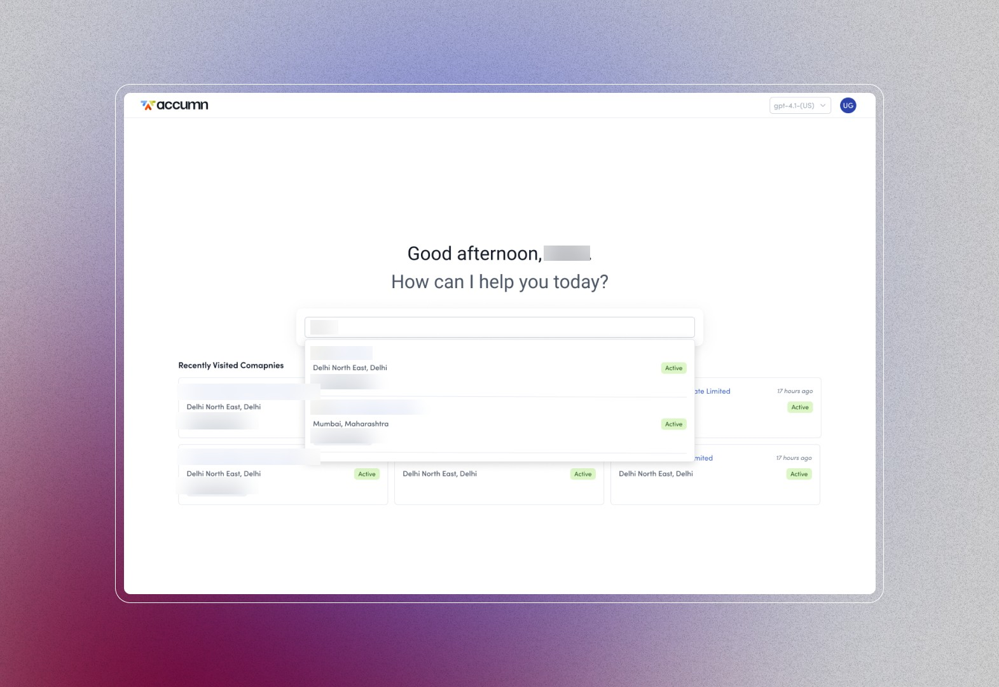
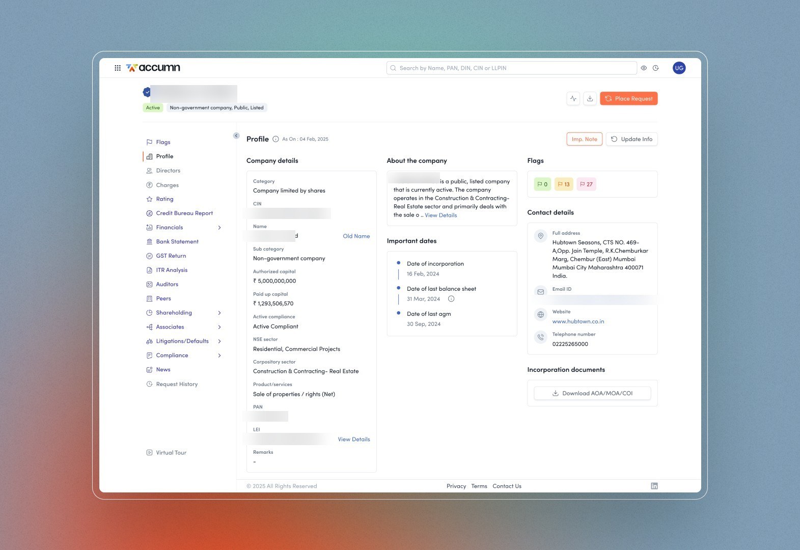
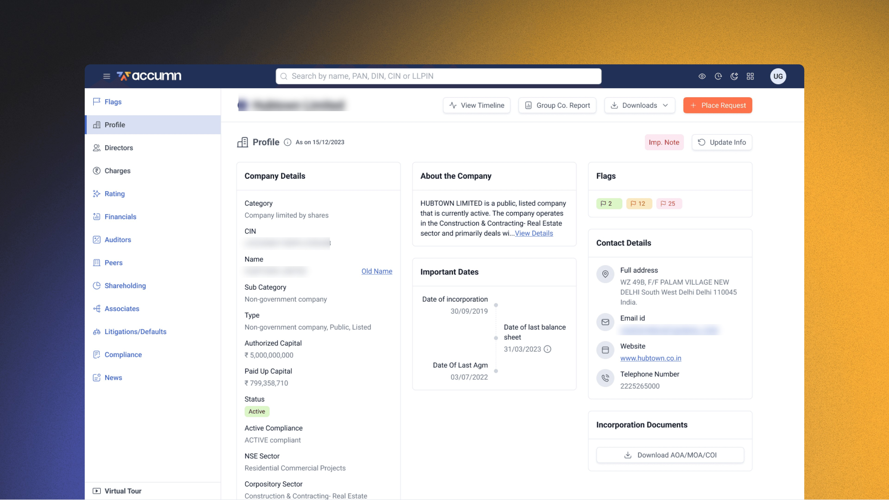
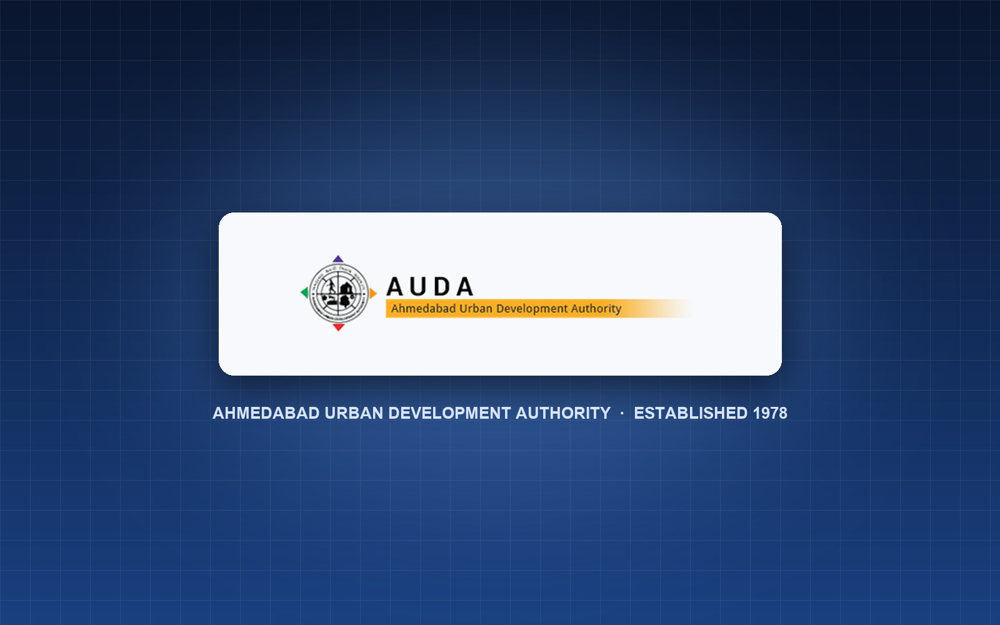
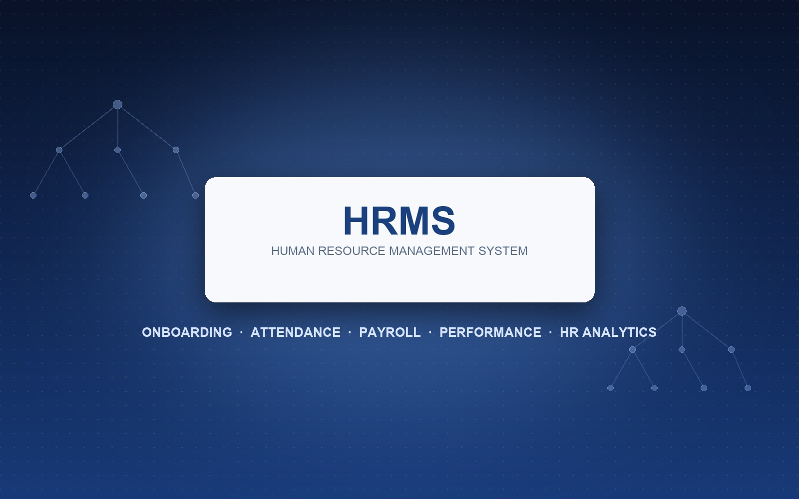

Designing digital products that solve real problems.
I combine strategic product thinking, UX research, interface design, design systems and front-end understanding to turn complex product problems into clear, scalable experiences.
Strategy meets craft.
A senior design profile built around product outcomes, not just polished screens.
I'm Krunal Patel, a Product Design Manager with 12+ years of experience across product design, UI/UX, web experiences and front-end implementation.
My recent work spans complex fintech ecosystems, enterprise workflows, financial intelligence, AI-assisted experiences and scalable design systems. I work across discovery, UX strategy, interaction design, visual systems and design-to-development collaboration.
From ambiguity to production.
A practical end-to-end process that adapts to the problem, product maturity and team.
Research, stakeholder conversations, competitive and product analysis.
Frame the problem, map journeys, identify priorities and constraints.
Flows, wireframes, prototypes, visual systems and interaction patterns.
Prototype testing, feedback loops, design critique and iteration.
Design systems, specs, front-end collaboration, QA and measurement.
Complex products, simplified.
Fintech is the strongest case-study thread in the source portfolio, supported by public-sector, education and tourism work.

Fintech AI Product
An intelligent fintech assistant designed to surface AI-driven insights, automate repetitive workflows and personalize financial analysis for enterprise users.

Databook
Unified financial intelligence experience combining company insights, credit data, financial statements, compliance flags and market analytics.

Fintech Product Suite
Enterprise workflows spanning lender–borrower management, financial monitoring, risk calculation, Databook intelligence and financial analysis.
Gir Online Booking System
Online permit booking experience for Gir Jungle Safari, Devalia Park, Girnar Nature Safari and Velavadar National Park.
International Kite Festival
Official portal for Gujarat's International Kite Festival — online registration, event itinerary, gallery and venue information across 10+ cities.

AUDA — Urban Development Portal
Portal for Ahmedabad Urban Development Authority — established 1978, managing urban planning, plot booking, auditorium booking and property services.

HRMS System
Enterprise Human Resource Management System covering employee onboarding, attendance, payroll, leave management and performance review workflows.
University Portal
Student Corner, results, notices and admissions — a reusable university portal pattern deployed across several institutions, including Sardar Patel University, Shri Govind Guru University and NFSU.
Design decisions, not decoration.
The following details are grounded in the uploaded portfolio HTML; quantitative claims are kept only where that source explicitly states them.
Make complex financial information actionable.
Fintech workflows combine dense data, risk signals, multiple entities and operational decisions. The design focus was to organize this complexity without removing the depth enterprise users need.
Understand analysts, finance teams and credit workflows.
The source describes user research with analysts and finance teams, discovery with credit teams, risk analysts and lending product managers, plus mapping of complex AI interaction patterns.
Use progressive disclosure, contextual intelligence and reusable patterns.
The work included AI entry points, onboarding, contextual insight panels, entity cards, unified search, side-by-side comparison and financial/risk modules.
Source-reported impact.
The uploaded portfolio reports a 35% reduction in decision time for the AI product, 25% post-launch engagement growth, 38% lower cognitive overload for first-time Databook users, and a design system that improved delivery consistency/speed by 30%.
From Figma to production.
I bridge design and engineering through component thinking, responsive implementation and design QA.
Pixel-accurate UI
Responsive interfaces with reusable components and close collaboration with front-end developers.
Scalable foundations
Tokens, components, patterns and documentation that help teams maintain consistency.
Design QA
Reviewing production implementation against intent across breakpoints, states and interaction details.
AI accelerates the workflow. Judgment stays human.
Synthesize faster
Use AI to organize information, summarize inputs and accelerate exploration while retaining human interpretation.
Explore more directions
Rapidly test concepts, content approaches and interaction possibilities before investing in high-fidelity work.
Reduce repetitive work
Use AI-assisted workflows to speed up iteration, documentation and design-to-development tasks.
12+ years of progression.
Product Design Manager
Leads and mentors cross-functional teams, drives user-centered UI/UX and product design strategy, and develops scalable design systems and AI-driven product experiences.
Lead Designer
Led design execution across multiple product lines, owned end-to-end delivery and scaled design-system components.
Web Designer
Designed wireframes, prototypes and responsive web/mobile interfaces while working closely with front-end developers.
Web Designer
Designed web and mobile experiences, branding assets and marketing creatives, including a company-wide rebranding initiative.
Web Designer & Developer
Designed and developed responsive websites and landing pages, ensuring usability, accessibility and performance optimization across deliverables while working closely with developers on accurate design execution.
IT Software Engineer
Developed and maintained system and embedded software, debugging and resolving system and networking issues to maintain operational uptime.
Jr. Java Developer
Developed software using Java, Advanced Java, Hibernate and MVC frameworks, collaborating with teams to translate requirements into technical solutions.
A multidisciplinary toolkit.
Product
- Product Strategy
- UX Strategy
- User Research
- Journey Mapping
- Information Architecture
Design
- UI/UX Design
- Interaction Design
- Visual Design
- Design Systems
- Prototyping
Technology
- Figma
- HTML
- CSS
- Responsive Design
- Front-End UI
Leadership + AI
- Design Leadership
- Mentoring
- Stakeholder Management
- AI-assisted Design
- Workflow Automation
Have a complex product problem? Let's solve it.
Looking for product design leadership, senior UI/UX work or design-to-development collaboration.